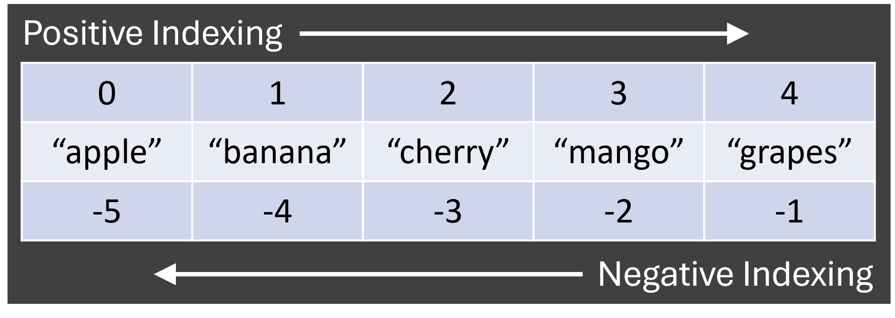

# pass a math expression to calculate its result.
print(1+1) 2Chapter 1: A quick intro to basic concepts in Python
print and type commands, type-conversion and operators.
The most basic function in every programming language is to display the output of a particular code statement. In Python, we use the print function to print the output of a math operation or a string of characters!!
# pass a math expression to calculate its result.
print(1+1) 2# pass a character string to display it.
print('Hello World') Hello WorldComments are lines which start with the hash # symbol. The # tells Python not to consider these lines while executing the code. Comments can be used to give additional information to the readers of the code or to just prevent certain lines from running Make it a habit to write good comments! It will help others and you.
You can print multiple values using a specified separator by using the sep argument in the print function.
# Example 1: By Default, a single space is used as the separator
# if the `sep` argument is not mentioned.
print('Hello', 'World')Hello World# Example 2: Using a comma as a separator
print('apple', 'banana', 'cherry', 'mango', 'grapes', sep=', ')apple, banana, cherry, mango, grapes# Example 3: Using a newline as a separator
print('Line1', 'Line2', 'Line3', sep='\n')Line1
Line2
Line3# Example 4: Using no separator
print('Hello', 'World', sep='')HelloWorldSimply printing a value which you type out isn’t so much fun. What if you have 10s or 100s of values? Do you type them all one by one? What if we could have a group of all the values we wish to print and the group can have a name which we can then pass to the print function? The name of this group is called as a variable.
The word variable means ‘a quantity that can vary in value’, which means the value can change. In Python (and other programming langauges), a variable is a name given to a single value or a group of values. It is similar to a container which contains the values. In Python, the symbol = is used to assign a name to a value. Thus = is also called Assignment symbol in Python. When we write x = 123, we mean the numeric value 123 is assigned to variable x.
Let’s say we want to store the value ‘apple’ in a variable called favorite_fruit. When we pass favourite_fruit to the print function, it displays the value contained in the favorite_fruit variable. The value in the variable can be changed too.
favorite_fruit = 'apple'
print(favorite_fruit)applefavorite_fruit = 'banana'
print(favorite_fruit)bananaWe can also store multiple values in a single variable. We can pass a group of values in a list which can be created using [] square brackets or a tuple which can created using () rounded brackets or a dictionary or set can be created using {} curly brackets. Each of these list, tuple, dictionary and set types have different properties and behave slightly differently. We will learn more about different data types in the next section.
# list [square brackets]
fruits = ['apple', 'banana', 'cherry', 'mango', 'grapes']
print(fruits)['apple', 'banana', 'cherry', 'mango', 'grapes']# tuple (round brackets)
fruits = ('apple', 'banana', 'cherry', 'mango', 'grapes')
print(fruits)('apple', 'banana', 'cherry', 'mango', 'grapes')# dictionary {curly brackets with key:value pairs}
fruits = {'f1':'apple', 'f2':'banana', 'f3':'cherry'}
print(fruits){'f1': 'apple', 'f2': 'banana', 'f3': 'cherry'}# set {curly brackets with individual values}
fruits_unique = {'apple', 'apple', 'banana', 'cherry', 'mango', 'grapes', 'banana'}
print(fruits_unique){'grapes', 'mango', 'cherry', 'apple', 'banana'}Dictionary and Set
While both Dictionary and Set are created using curly brackets {}, the structure differs. A Dictionary is a list of key-value pairs. The key is used to get the value.
fruits = {'f1':'apple', 'f2':'banana', 'f3':'cherry'}
print(fruits['f1']) # `f1` is the key, 'apple' is the value of `f1`.appleDictionary is primarily used to create a map in situations where we want to do multiple find-replace operations on a string or renaming multiple columns of a table. We will see soon how we can use Dictionary.
A Set is a list of only unique values. No duplicate values are allowed, Even if you create a Set with duplicate values, it keeps only the unique values. In a Set, we can only check if a particular value is in the set or not.
fruits_unique = {'apple', 'apple', 'banana', 'cherry', 'mango', 'grapes', 'banana'}
print('cherry' in fruits_unique)
# this will return True or False depending on whether the value 'cherry' is in the set.TrueWe have only seen variables containing character strings till now. What about other types of data like numbers, true/false boolean values? Let’s explore the different types of data that can be created in Python.
The data type of a value or variable can be determined by using the type function. We can print the type of a value.
print(type(42)) # `int` means Integer (number without decimal values)<class 'int'>print(type(42.0)) # `float` means Float (number with decimal values)<class 'float'>print(type("42.0")) # `str` means String<class 'str'>print(type(True)) # `bool` means Boolean which can be either True or False<class 'bool'>We can define a string either by using ‘single-quotes’ or “double-quotes”. Python make no distinction between the two forms.
Just like the print function, we can pass a list of values and it will tell us what kind of container it is.
print(type(['apple', 'banana', 'cherry', 'mango', 'grapes'])) # list<class 'list'>print(type(('apple', 'banana', 'cherry', 'mango', 'grapes'))) # tuple<class 'tuple'>print(type({'f1':'apple', 'f2':'banana', 'f3':'cherry'})) # `dict` means `dictionary`<class 'dict'>print(type({'apple', 'apple', 'banana', 'cherry', 'mango', 'grapes', 'banana'})) # `set`<class 'set'>There are some other data types available in Python but we will look at them in later chapters.
There are specific functions to convert one data type into another data type. Let’s see how to convert variable x having value 1 can be converted into other data types.
x = 1
print(x)
print(type(x))1
<class 'int'>x_float = float(x)
print(x_float) # Note the decimal point in the output of this line.
print(type(x_float))1.0
<class 'float'>x_str = str(x)
print(x_str)
print(type(x_str))1
<class 'str'>x_bool = bool(x)
print(x_bool)
print(type(x_bool))True
<class 'bool'>In Python, any value which is not Zero (0) is considered as True when converted to Boolean data type using the bool() function, only the number zero (0) will return False, everything else will return True.
print(bool(0))
print(bool(0.0))
print(bool(1))
print(bool("ABC"))
print(bool(0.1))
print(bool(['A','B','C']))False
False
True
True
True
TrueThere are many symbols in Python which perform mathematical, logical or some other operations depending on the data type of the variables they operate on. These symbols are called operators and the variables or values on which they operate are called operands.
Python supports the basic mathematical operations like addition +, subtraction -, multiplication *, division /, modulo %, exponentiation **, and integer-division //. Each of these operators takes 2 operands and returns a single value.
print(5+2) # Addition7print(5-2) # Subtraction3print(5*2) # Multiplication10print(5/2) # Division2.5print(5//2) # Integer Division2print(5%2) # Modulo (Remainder)1print(5**2) # Exponentiation (Power)25There are few other symbols which compare 2 values and returns True or False boolean result. The symbols are greater-than >, less-than <, is-equal-to ==, not-equal-to !=, greater-than-or-equal-to >=, and less-than-or-equal-to <=.
five = 5
two = 2
print(five, two, sep=", ")5, 2five > twoTruefive >= twoTruefive < twoFalsefive <= twoFalsefive == twoFalsefive != twoTrue= and ==
The single = is used to assign value to a variable. The == is used to check for equality of value.
a=5 means the value 5 is assigned to variable a while a==5 will check if the value of a is 5 or not and will return a True or False value.
a = 5
print(a) # this will output 5
print(a == 5) # this will output True5
TrueTo access a value from a group of values, we use the index or the position of the value to access it. For ordered data types like list, tuple and str (Yes! Strings are a group of characters!!), we can access individual values using their position inside square brackets [].
In Python, the first value or element is considered the Zeroth element i.e. the index of first element is 0.

fruits = ['apple', 'banana', 'cherry', 'mango', 'grapes'] # list
print(fruits[1])bananafruits = ('apple', 'banana', 'cherry', 'mango', 'grapes') # tuple
print(fruits[2])cherryfruits_string = "apple"
print(fruits_string[0])aYou can also pass a range of index values to access multiple values.
fruits = ['apple', 'banana', 'cherry', 'mango', 'grapes'] # list
print(fruits[0:2])
print(fruits[:2])
# starts from 0 by default as we didn't give it a start value.['apple', 'banana']
['apple', 'banana']Note the peculiar behaviour of the range. While we pass 0:2, it returns the Zeroth and First element only. The Element at index 2 is not returned. So 0:2 is to be read as start with 0 and end before 2. You can also see that the 0 in 0:2 can be ommitted and it still works. You also use negative index values to access the values from the right side. So, similar to 0:2 returns items at 0 and 1 positions, -3:-1 should be read as start with -3 and end before -1. This will return the items at -3 and -2 positions.
fruits = ['apple', 'banana', 'cherry', 'mango', 'grapes'] # list
print(fruits[-1])
# returns the last itemgrapesA range of negative indexes returns the last X values i.e -2
print(fruits[-2:])
# If stop value is not given, it returns all items till end of list.['mango', 'grapes']What happens when we pass an index value which is not in the range of values? We get an IndexError: list index out of range error message.
fruits = ['apple', 'banana', 'cherry', 'mango', 'grapes'] # list
print(fruits[6])
# returns the last itemIndexError: list index out of rangeDictionary and Set data types are unordered data types. This means that the order of the value or the position of the value inside the variable does not matter. Therefore, we cannot access their values by using the index (position) of the value.
In a Dictionary, we can use the key inside square brackets to access the value of that key.
# In dictionary, `f1` is the key, 'apple' is the value of `f1`.
fruits_dict = {'f1':'apple', 'f2':'banana', 'f3':'cherry'}
print(fruits_dict['f1'])
weird_dict = {1:"One", 0:"Zero", 2:"Two"}
print(weird_dict[0])
# Note that the Key 0 is not the first element in the dict.
# In a set, we can only check if "cherry" is in the set or not.
fruits_set = {'apple', 'banana', 'cherry', 'mango', 'grapes'}
print("cherry" in fruits_set)
print(fruits_set[0])apple
Zero
TrueTypeError: 'set' object is not subscriptableThe TypeError message above basically tells us that a Set data type cannot be accessed using indexing.
Write a program to implement following steps:
games with more than 5 itemsgames list.games list.Attempt it first and then look at the Answer tab.
# Create List named `games` with more than 5 items
games = ['Criket', 'Football', 'Kabaddi', 'Badminton', 'Tennis', 'Basketball']
# Print the second item in the `games` list.
print(games[1]) # because item at 2nd position has index=1.
# Print the last 2 items in the `games` list.
print(games[-2:])Football
['Tennis', 'Basketball']